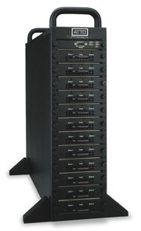
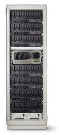

Анатолий Журкин
На рынке корпоративных массивов хранения данных традиционно "правит бал" интерфейс SCSI. ИТ-менеджеры без колебаний одобряют заказы на дисковые массивы на базе этого высококлассного интерфейса, особенно если речь идет о центрах обработки данных и других критически важных приложений для современного бизнеса.
Но сегодня, по-видимому, железная хватка SCSI на рынке корпоративных RAID-массивов начинает ослабевать. Дело в том, что наблюдается тенденция к увеличению числа поставщиков RAID-массивов на базе технологии ATA с высокими (и постоянно растущими) показателями производительности и надежности, оснащенных к тому же прикладными средствами управления корпоративного класса. Большинство из таких массивов предназначены для резервирования данных с использованием операции "с диска на диск".
Аналитики, поставщики и пользователи обычно соглашаются, что RAID-массивы на базе интерфейса SCSI все еще остаются лучшим выбором для активных, характеризующихся высокой интенсивностью операций приложений, таких, как базы данных. Тем не менее уже сегодня многие эксперты прогнозируют, что технология ATA и новое ее поколение Serial ATA в конечном счете составят конкуренцию SCSI даже на рынке высокотехнологичных корпоративных RAID-систем. По словам разработчиков ATA RAID-систем, в прошлом они боролись с пренебрежительным отношением к данному оборудованию и мнением, что данные клиентов слишком важны, чтобы размещать их на ATA-устройствах. Однако это заблуждение сейчас практически исчезло, многие ИТ-менеджеры поняли, что ATA - настоящая, вполне надежная технология.
Сколько еще падать ценам
Разрыв цен между SCSI- и ATA-дисками довольно значителен. А когда стоимость дискового пространства на ATA-дисках емкостью 1 Tбайт упала ниже 1,25 долл. за 1 Гбайт, разрыв стал пропастью. В частности, в конце прошлого года многие розничные поставщики в США предлагали диски известных фирм-производителей на базе ATA/100 емкостью 80 Гбайт со скоростью вращения шпинделя 7200 об./мин меньше чем за 100 долл. Отметим для сравнения, что стандартный 73,4-Гбайт диск на основе Ultra160 SCSI со скоростью вращения шпинделя 10 000 об./мин стоил тогда свыше 350 долл. Таким образом, стоимость хранения 1 Гбайт данных отличалась более чем в четыре раза.
В то же время были широко доступны ATA-диски емкостью до 200 Гбайт со скоростью вращения шпинделя 7200 об./мин, удельная стоимость дискового пространства которых не превышала 2 долл. за 1 Гбайт. С другой стороны, емкость Ultra160 SCSI-дисков редко превышала 80 Гбайт, а цены на них были умопомрачительными - 6-7 долл. за 1 Гбайт. Таким образом, для создания подсистемы емкостью, скажем, 0,5 Тбайт было достаточно всего четырех ATA-дисков. Следовательно, появилась возможность создавать хранилища просто колоссальной емкости за вполне приемлемые деньги.
Кроме того, немаловажным фактором был разрыв в производительности и надежности SCSI- и ATA-систем, а также, по мнению отраслевых аналитиков, значение этого разрыва в конфигурациях на основе массивов. Известно, что при увеличении числа дисков в массиве свыше пяти шина быстро насыщается практически в любой системе, что сводит на нет преимущество более быстрой передачи данных со SCSI-дисков при большей скорости вращения шпинделя. Что с того, что SCSI-диски вращаются в три раза быстрее, когда в итоге получается не преимущество, а лишь повышенная теплоотдача.
Некоторые специалисты не согласны и с мнением о недостаточной надежности ATA-дисков для применения на предприятии. Так, по данным опроса, проведенного аналитиками из компании Enterprise Storage Group (Милфорд, шт. Массачусетс), многие клиенты не слышали ничего плохого о надежности ATA-систем. Наоборот, пользователи часто отмечали, что ATA-диски в ряде случаев оказывались даже надежнее некоторых аналогичных устройств с интерфейсами SCSI и Fibre Channel. Действительно, сегодня средний срок наработки на отказ у ATA-дисков составляет не менее 30 лет, поэтому отказы дисков в RAID-системах могут создавать проблемы только в наиболее критичных корпоративных приложениях.
Эксперты также отмечают, что до недавнего времени поставщики SCSI-устройств не слишком преуспели в снижении цен на свои изделия; правда, в ближайшем будущем ситуация вполне может поменяться. В частности, есть предпосылки для снижения цен на SCSI и Fibre Channel, но об этом, по словам специалистов, пока еще рано говорить.
Компании "новой волны"
Как уже отмечалось, постоянно растет число поставщиков RAID-массивов на базе интерфейса ATA. Многие из них ориентируются на небольшие компании и рынок RAID-массивов low-end с небольшим числом напрямую подключенных ATA-дисков. Другие создают решения типа "RAID на микросхеме" на базе заказных интегральных микросхем ASIC и переносят функции поддержки RAID-массивов на системную плату.
Однако уже в прошлом году нескольких компаний - в их числе 3ware (http://www.3ware.com), Consensys (http://www.consensys.com) и ExaDrive Networks (http://www.attotech.com, вошла в состав ATTO Technology) - нацелились на рынок корпоративных RAID-решений. На основе технологии ATA они разработали RAID-массивы с прямым или сетевым подключением, характеризующиеся производительностью, сравнимой или превышающей этот параметр в массивах c интерфейсами SCSI или Fibre Channel. В частности, в линейке продуктов Raidzone компании Consensys применена специальная объединительная плата и контроллеры, которые, по заверениям специалистов компании, обеспечивают равную или лучшую производительность работы с данными, чем системы на шине Ultra SCSI. По словам специалистов компании, их системы ни в чем не уступают решениям на базе SCSI и Fibre Channel, за исключением, пожалуй, одного - цен.
В RAID-решениях на базе ATA, таких, как семейство Diamond компании ATTO Technology, используется смешанный подход: в них ATA-диски совмещаются с несколькими SCSI- или FC-интерфейсами и специализированным контроллером. Для этой цели была специально разработана патентованная технология ADXT (Aggregated Data Transfer Technology).
|  | Система Diamond компании ATTO Technology.
|
По утверждениям производителей, RAID-массивы на базе ATA-устройств обладают большинством преимуществ, которыми обычно характеризуются SCSI-массивы. Они обычно поддерживают все стандартные уровни RAID, включая RAID 5, а также горячую замену и резервирование, автоматическое обнаружение неисправностей, перемещение при сбое (failover) и перенос "зеркал" данных. Кроме того, в таких массивах поддерживается работа основанных на политиках средств управления, удаленный мониторинг и развитые возможности диагностики, например, постоянный контроль температуры, напряжения и тока. Хотя поставщики RAID-массивов на базе технологии ATA и не сообщают о крупных проектах, некоторые клиентские компании уже создали у себя подключаемые к сети и состоящие из десятков дисков RAID-массивы на базе ATA общей емкостью 10 Тбайт.
Представители компаний, специализирующихся на выпуске ATA RAID-решений, заявляют, что их продукты проходят сертификацию на предмет совместимости со многими изделиями сторонних поставщиков, в том числе c FC-коммутаторами, средствами виртуализации устройств хранения, инструментами управления SAN и операционными системами. Они отмечают, что используют несколько иной подход к рынку, чем крупные поставщики готовых решений. Именно поэтому столько внимания уделяется проблемам совместимости, особенно с Fibre Channel в сетях хранения данных SAN.
ATA не просто находит свою нишу
Пока RAID-массивы на основе технологии ATA встретили самый теплый прием на некоторых вертикальных рынках. В числе основных клиентов этой техники - правительственные организации и университетские научно-исследовательские лаборатории, нефтяные и газовые компании, организации, занимающиеся видеонаблюдением и хранением данных, т. е. те, кто имеет дело с очень большими объемами данных. Во многих случаях у компаний нет другого рентабельного способа хранить такие объемы данных, кроме как на ленте или компакт-дисках, а это означает потерю быстрого доступа к данным. Часто при выборе между ATA и SCSI при принятии решения о покупке (а это довольно значительные средства) клиенты не без оснований в первую очередь уделяют внимание соотношению цена/производительность.
Так, в центре молекулярных исследований лаборатории Pacific Northwest National Laboratory (Ричмонд, шт. Вашингтон) перенесли базу данных суперкомпьютеров с ленточной системы емкостью 20 Тбайт на ATA-массив. Кроме того, там предполагают установить 200-Тбайт RAID-массив на базе технологии ATA в качестве основной подсистемы хранения в новом суперкомпьютере, который, по словам руководителя лаборатории, станет одной из самых крупных и быстродействующих Linux-систем в мире.
Почему же в лаборатории не воспользовались интерфейсом SCSI для создания RAID-массива? Ответ, наверное, кроется в результатах сравнительного исследования соотношения цена/производительность для ATA-дисков и более дорогих SCSI-устройств. Как оказалось, для поставленных задач падение производительности на 4-5% в ATA-системах по сравнению со SCSI никак не перевешивало разницу в цене, достигающую 200-300%.
На рынке корпоративных устройств хранения RAID-массивы на базе технологии ATA появились как альтернатива ленточным системам резервного копирования и системам "почти прямой доступности" (nearline), таким, как устройства с автоматической сменой компакт-дисков. В условиях снижения цен на диски и усложнения RAID-массивов на базе технологии ATA образовалась новая быстро растущая ниша на рынке устройств хранения с практически прямым доступом.
Еще один пример: в ипотечном банке BayView Financial (Майами, шт. Филадельфия) переход на ATA-системы обеспечил заметные выгоды. В настоящее время для хранения резервной копии данных перед копированием информации на ленту в BayView используется система корпорации Network Appliance (http://www.netapp.com) NearStore R100, что обеспечивает практически прямой доступ к последним резервным копиям. На получение необходимых данных из ленточной системы порой уходило до 20 ч. Теперь же, если пользователь теряет файл, есть, по крайней мере, возможность вернуться к последней резервной копии и восстановить данные в считанные минуты.
|  | Cистема Network Appliance NearStore R100.
|
Кроме того, как утверждают в BayView, планируется также перенести архив образов документов с устройства с компакт-дисками на R100. Таким образом, эта организация собирается перейти от системы, где на получение изображения требуется от 30-40 с, к такой, где сотням пользователей на доступ к документам нужны считанные доли секунды.
Как отмечают специалисты компании Network Appliance, это мнение отражает важную тенденцию на рынке корпоративных ATA-устройств хранения. Технология ATA позволяет хранить в прямом доступе информацию, которая ранее была недоступна напрямую. Ведь объемы данных, хранимых на устройствах с прямым доступом, и данных, расположенных на лентах, которые стопками лежат где-то в шкафах, различаются на порядки.
Реакция на правом фланге
Крупнейшие игроки на рынке систем хранения, такие, как IBM (http://www.ibm.com), Network Appliance и EMC (http://www.emc.com), уже выпустили RAID-массивы на базе интерфейса ATA для создания систем с практически прямым доступом к данным, дисковых систем резервирования или даже базовых систем хранения данных для компаний среднего размера.
В отличие от менее крупных конкурентов эти корпорации не столь оптимистичны в оценке краткосрочной перспективы RAID-массивов на базе интерфейса ATA. По словам представителей этих компаний, они все еще не наблюдают у своих крупных клиентов готовности переносить критические важные данные на ATA-диски. Кроме того, интерфейс SCSI обеспечивает наивысшую производительность, и преимущество этой технологии очевидно. Конечно, технология ATA также важна, но в настоящее время ее можно адресовать только среднему сектору рынка и применять для создания распределенных сред.
С другой стороны, в компании Network Appliance были даже удивлены реакцией на начало продаж ATA-систем линейки NearStore в прошлом году. Из-за исключительно благоприятной реакции компании пришлось бросить дополнительные ресурсы на разработку систем NearStore. Тем не менее в Network Appliance также стремятся правильно позиционировать подобные решения. Здесь считают, что акцент правильнее делать не столько на производительности, сколько на доступности. Дело в том, что диски ATA работают медленнее и более склонны к отказам, к тому же в ATA-среде более вероятны нарушения критически важных корпоративных бизнес-операций.
Serial ATA и iSCSIПредставленный в августе 2001 г. стандарт Serial ATA (SATA) обладает рядом существенных преимуществ перед параллельной реализацией этого интерфейса. Основное его преимущество - повышенная пропускная способность. Как известно, Serial ATA, в котором совмещаются новый аппаратный интерфейс со старым командным протоколом ATA, обеспечивает скорость передачи данных до 150 Мбайт/с, а в следующей версии Serial ATA планируется увеличить этот показатель до 300 Мбайт/с. В Serial ATA применяются существенно более тонкие кабели, число проводников у которых сокращено. Общая длина кабеля достигает 1 м. Все это упрощает разводку, улучшает вентиляцию системного блока и повышает масштабируемость. Кроме того, у Serial ATA более низкое рабочее напряжение, усовершенствована система команд поддержки очередей, а также имеются другие характеристики, повышающие производительность. Некоторые отраслевые аналитики полагают, что Serial ATA поспособствует дальнейшему сокращению разрыва между дисками ATA и SCSI. В частности, по мнению одного из экспертов Gartner, для "верхушки" (а это 25-30% рынка корпоративных систем) лучше всего подойдут диски Fibre Channel. Но с технологической точки зрения оставшимся 70% вполне достаточно Serial ATA. Несомненно, чтобы стать заметным на рынке корпоративных систем, Serial ATA нуждается в поддержке со стороны ведущих поставщиков систем хранения. Именно последние должны создать устройства на базе Serial ATA и агрессивно продвигать их, однако делать это крупные фирмы-производители пока особо не спешат. По мнению аналитиков, обострение конкуренции быстро вынудит поставщиков серьезнее отнестись к своим планам относительно Serial ATA. В частности, они считают, что компания масштаба EMC, вышедшая на рынок с подключаемым к сети хранилищем данных NAS на базе Serial ATA, добилась бы огромного успеха и в буквальном смысле сняла бы сливки с нового рынка. Другой стандарт - Internet SCSI (iSCSI) может еще больше поспособствовать распространению ATA-устройств на рынке корпоративных систем. Как известно, iSCSI, который представляет собой основанный на IP сетевой стандарт для соединения устройств хранения данных, мог бы в конечном счете составить серьезную конкуренцию Fibre Channel как рентабельное решение для создания SAN-сетей. По мнению эксперта из компании Enterprise Storage Group, массивы на базе Serial ATA в совокупности с iSCSI-маршрутизаторами, коммутаторами сетей хранения данных и другими устройствами могли бы стать идеальным решением, особенно в среднем секторе рынка. Недавно рабочая группа Serial ATA II и ассоциация SCSI Trade Association (STA) договорились о совместимости технологии Serial Attached SCSI с дисковыми накопителями Serial ATA на уровне системы. В перспективе это сотрудничество должно дать беспрецедентно широкие возможности для конфигурирования систем и предоставить множество преимуществ производителям компьютеров и ИТ-специалистам. |
Пустят ли ATA в центры обработки данных
Итак, RAID-массивы на базе интерфейса ATA заняли определенную нишу на рынке. Однако если рассматривать их как альтернативное решение для резервирования данных, остается вопрос: способна ли технология ATA составить конкуренцию SCSI в центрах обработки данных?
Одни эксперты говорят, что многие корпоративные клиенты будут прислушиваться к мнению ведущих фирм-поставщиков, с которыми у них сложились долгосрочные отношения. Несомненно, требуется, чтобы больше ведущих компаний в отрасли приняли ATA в качестве важной части своих планов, что даст пользователям возможность чувствовать себя более уверенно в отношении этой технологии и считать данный стандарт вполне жизнеспособной альтернативой. Пожалуй, это вопрос психологии, маркетинга, тестирования и опыта.
Однако другие аналитики полагают, что на рынке корпоративных RAID-устройств до сих пор превалирует сильный скепсис по отношению к ATA. Корпоративные клиенты с готовностью внедряют ATA в распределенных средах, но никак не хотят пускать эту технологию в центры обработки данных. Сотрудники центров обработки данных не желают рисковать своей карьерой только для того, чтобы сэкономить немного средств, установив ATA вместо SCSI.
По сути, некоторые ИТ-менеджеры осторожничают с технологией ATA именно по этой причине: им кажется, что стоимость подобных решений слишком хороша, чтобы быть правдой. По словам директора по информационным технологиям факультета информатики и проектирования компьютеров в Университете штата Нью-Йорк в Буффало, его организация не готова к размещению RAID-систем на базе интерфейса ATA в своей среде хранения с высокими требованиями к производительности, даже несмотря на более низкую стоимость подобных решений. Он говорит, что в организации есть опыт работы с ATA-системами, и они действительно рентабельны, когда речь идет о потребности в хранилище большой емкости, где не предъявляется особо высоких требований к производительности. Однако при покупке ATA-системы емкостью 2 Тбайт за деньги, на которые можно купить 300-Гбайт систему производства Network Appliance или EMC, трудно избавиться от мысли, что чем-то жертвуешь - будь то ПО, прилагаемое к системе, производительность или надежность.
Тем не менее в некоторых случаях ответственные ИТ-менеджеры решают, что небольшие преимущества SCSI-систем в производительности просто не стоят затраченных на них денег. Так, компания Auctionwatch.com (Сан-Бруно, шт. Калифорния), поставщик онлайновых приложений и услуг по управлению продажами, почти завершила перевод всех корпоративных систем хранения данных со SCSI- на ATA-массивы. По словам руководителя компании, в основу решения о переводе легли соображения экономии средств: ведь в итоге был получен фактически тот же уровень производительности и надежности, что и в SCSI-системе, в том числе в критически важной для бизнеса базе данных и на серверах приложений. Сейчас производительность в системах практически не изменилась - даже в базах данных, за производительность которых специалисты компании сначала несколько опасались. Сейчас же они получили доказательство того, что ATA-диски ничем не уступают SCSI-устройствам.
Директор по маркетингу продуктов компании 3ware считает, что сопротивление ATA будет сходить на нет по мере того, как менеджеры поближе познакомятся с этой технологией и примут ее. По его мнению, цена ATA-решений настолько привлекательна, что компании смогут применить их для хранения данных, ранее не защищенных технологиями RAID. ATA проложит себе путь в центры обработки данных снизу вверх - как только CIO и ИТ-менеджеры освоятся с применением ATA в системах низкого класса, они не замедлят применить ее в системах более высокого уровня.
Главный аналитик в исследовательском подразделении Storage Research компании Gartner Dataquest отмечает, что другие технологии хранения пробили себе путь в центры обработки данных аналогичным образом. По его словам, надо бороться с предрассудками клиентов. Они будут утверждать, что ATA - ненадежная технология, что они не хотят ее, а желают SCSI и Fibre Channel. Но ситуация с дисками ATA та же, что наблюдалась 15 лет назад, - тогда EMC и другие компании представили малогабаритные диски в то время, когда на рынке господствовало убеждение, что диски с такими форм-факторами непригодны для использования на предприятиях.
Принятие неизбежного
Так заинтересованы ли ведущие поставщики систем хранения в том, чтобы затормозить распространение RAID-массивов на базе интерфейса ATA? Эта мысль, возможно, не раз посещала некоторых конкурентов, которые указывали на необычайно большой запас по доходности при продаже SCSI-устройств, стоимость хранения 1 Мбайт на которых зачастую в два-три раза превышает аналогичный показатель ATA-дисков.
По мнению большинства аналитиков, несмотря на имеющееся сопротивление ведущих поставщиков, общая тенденция к принятию ATA неоспорима. Наблюдается огромный ценовой разрыв между поставляемыми ими ATA- и SCSI-изделиями. Производители пытаются применять искусные маркетинговые ходы и мастерски выдумывать причины такой разницы в ценах, но ситуация все-таки прозрачна. Конечно, справедливости ради следует заметить, что все действительно непросто. Крупные компании привыкли продавать свою продукцию по ценам с большим запасом, а ATA-бизнес основан на узкой марже доходности и низкой норме прибыли.
Некоторые поставщики даже отказываются говорить о RAID-решениях на основе технологии ATA. Пожалуй, это чисто маркетинговое решение с их стороны. Если успешно продаются высокопроизводительные SAN-решения с удельной стоимостью хранения 1 Тбайт в 50 тыс. долл., то какие надо найти причины, чтобы предлагать продукт с такими же характеристиками за 5 тыс. долл. в расчете на 1 Тбайт?
Эксперты отмечают, что некоторые поставщики рассматривают RAID-массивы на базе ATA как угрозу бизнесу, а не новую возможность для него. Пожалуй, здесь речь идет не о технологии, а о защите доходов и бизнеса. Если сейчас компании отказываются продавать ATA-решения, потому что им не удается заработать на них много денег, то в конечном счете конкуренция все же вынудит их к переменам.
Так, Network Appliance уже рассматривает технологию ATA как быстро растущую часть рынка корпоративных решений для хранения данных. Вообще говоря, все такие "незаметные" технологии начинают с низкой производительности и надежности, имея в качестве основного преимущества низкую цену и достаточное качество для обслуживания отдельных ниш рынка. Но по мере совершенствования этих технологий их подхватывают все больше поставщиков, и они сами начинают двигать рынок. Налицо классический пример революционного новшества - гранды рынка борются, пытаясь сохранить свой рынок сбыта, а новички "оседлывают" технологию и уверенно двигаются вперед. В конечном счете надо либо принять неизбежное, либо проститься с рынком.
"Лед тронулся" - ATA RAID грандов индустрииВ прошлом году корпорации IBM, Network Appliance и EMC представили RAID-решения на основе ATA. Однако ATA-изделия этих компаний не предназначены для массового рынка корпоративных ИТ - они ориентированы на конкретные ниши или на средний сектор рынка. Таким образом, данные решения в первую очередь предназначены предприятиям, которые не в состоянии позволить себе RAID-решение корпоративного класса. Тем не менее появление подобных изделий знаменует интересную тенденцию на рынке устройств хранения класса high end. Кроме того, они прокладывают путь новым RAID-решениям на базе ATA. Корпорации Network Appliance и EMC представили RAID-решения на основе интерфейса ATA, предназначенные прежде всего для хранения данных в режиме с почти прямым доступом. Так, NetApp NearStore 100, система из RAID-массивов на базе ATA емкостью 12 Тбайт, объединяет данные из многих файловых серверов и представляет собой доступное резервное хранилище периодически обновляемых данных и платформу для пересылки резервируемой информации в оффлайновые хранилища. Характеристики этой и других систем NetApp NearStore приведены в таблице.
С другой стороны, EMC позиционирует свою ATA-систему Centera как хранилище с почти прямым доступом к статической информации (фиксированному контенту) - к таким данным, как медицинские изображения, мультимедийные данные и другая информация, к которой пользователи обращаются нечасто, но не желают испытывать неудобства и задержки, характерные для оффлайновых систем хранения. По мнению ряда экспертов, хотя EMC и не называет Centera RAID-решением, но в этой системе применена практически аналогичная технология. А вот IBM со своей системой TotalStorage NAS 100 ближе всего подошла к созданию настоящего RAID-решения на базе технологии ATA. Система NAS 100, которая состоит из четырех 120-Гбайт ATA-дисков в каждом модуле и поддерживает уровни RAID 0, 1 и 5, предназначена прежде всего для клиентов с развитой сетью офисов и удаленных отделений, а также предлагается в качестве минималистского RAID-решения для компаний небольшого и среднего размера. В любом случае IBM ожидает, что NAS 100 будет рентабельным решением, благодаря которому RAID-технологии придут в те области, где ранее применялись системы хранения данных без резервирования.
|
|||||||||||||||||||||||||||||||||||||||||||||||||||||||||